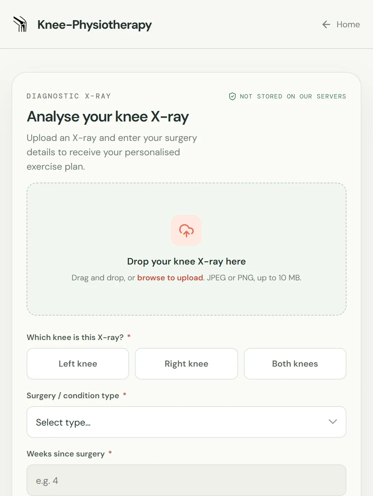
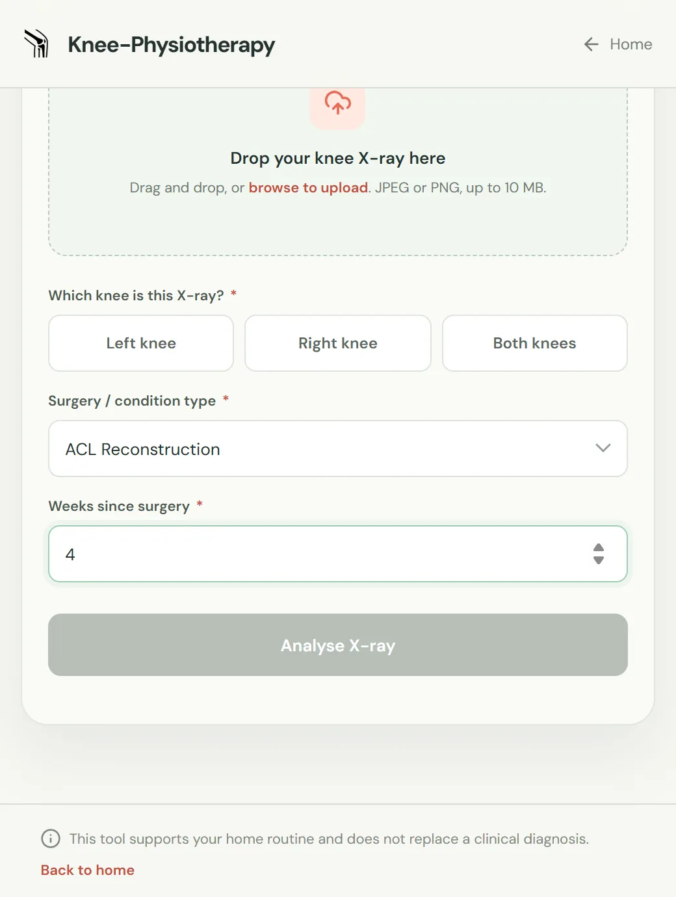
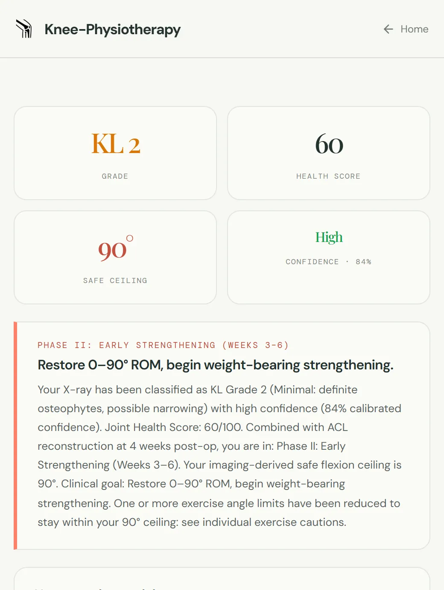
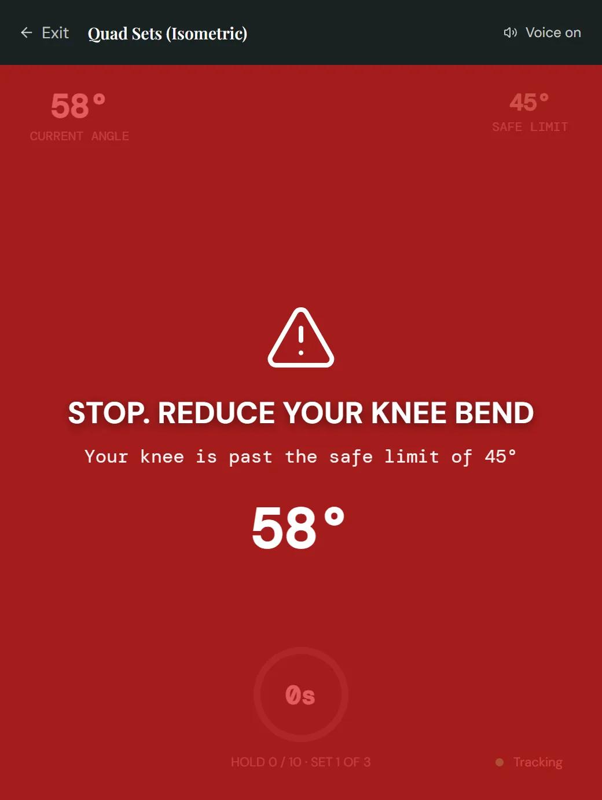

01
X-ray upload
Start with the image of your knee.
Photograph or scan your knee X-ray and upload it. Choose left, right or both. The model grades it on the Kellgren–Lawrence scale, from 0 to 4.

Upload your knee X-ray and your surgery details. Get a personalised exercise plan, then follow along while your webcam watches the knee angle and warns you the moment you go too far.
KL grade 2, from your X-ray.
Four steps from your imaging to a guided session. Each one uses your own X-ray and surgery history.
How we keep you safeX-ray upload
Photograph or scan your knee X-ray and upload it. Choose left, right or both. The model grades it on the Kellgren–Lawrence scale, from 0 to 4.

Surgery details
Select your procedure: ACL reconstruction, total knee replacement, meniscus repair, arthroscopy or OA management. Then add how many weeks it has been.

Personalised plan
Your KL grade and recovery stage set the exercises, the repetitions, and a safe angle limit for each exercise.

Live oversight
The webcam tracks your knee angle in real time. Go past your limit and the screen turns red and an alarm sounds, instantly.

Every exercise has its own angle limit, set by the severity on your X-ray and your recovery protocol. The webcam tracker watches that limit while you move and warns you if you pass it.
Your safe limit widens as you heal. Drag the slider to see how the limit moves between recovery phases.
Every exercise in your plan comes with an animated demonstration, so you know the movement before the camera starts.
See the exercise animations